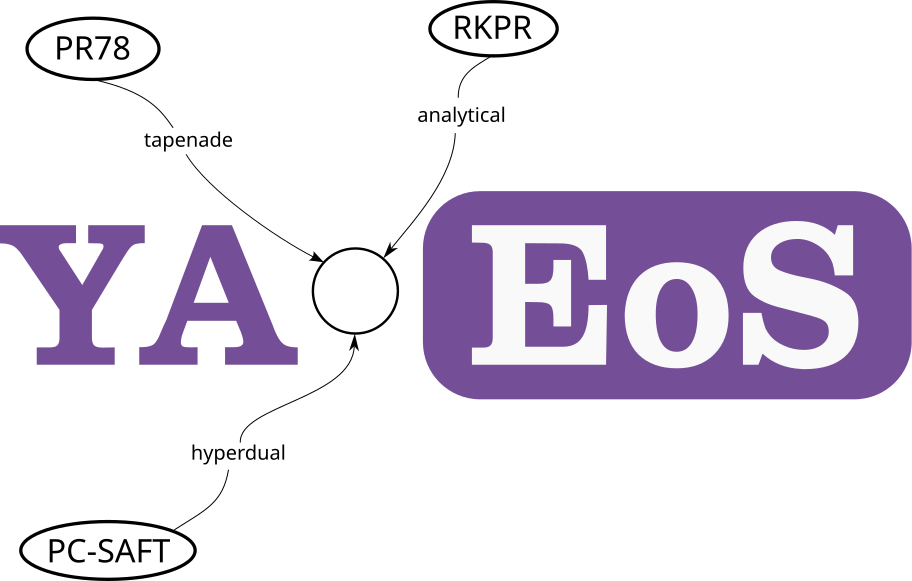

Calculation of thermodynamic properties and phase-equilibria with Equation of State. Keeping high performance with the power of Fortran and the possiblity of using either automatic differentiation and anallytical derivatives.
Find us on…
yaeos



There are multiple open source equations of state libraries, like:
- Clapeyron
julia - FeOs
rustwithPythonbindings - teqp
C++withPythonbindings - thermo
python - thermopack
FortranwithPythonbindings - CoolProp
C++withPythonbindings
Here we are presenting yet another (still in development) one, that tackles the same problem just, in another way. Mostly exploiting the readability and extensibility of Modern Fortran for scientists to have an easy way to implement new thermodynamic models without dealing with lower-level languages but still getting decent performance. And also this framework provides the possibility of using analytically obtained derivatives so both options are easily available.
This is an experimental work in progress and we recommend the before mentioned libraries if you are intending to use some of this in real work. Big part of the code comes from a refactoring process of older codes so not all parts are easily readable, yet.
We focus mainly on that the addition of a new thermodynamic model as easily as possible. Also providing our models too!
For now, we only include residual Helmholtz model (like Cubic or Saft Equations of State). But we’ll be adding other models like $G^E$ (UNIFAC for example).
A little taste of yaeos
A lot of users get the bad picture of Fortran being old and archaic since most
of the codes they’ve seen are written in ancient F77.
use yaeos, only: PengRobinson76, pressure, ArModel
integer, parameter :: n=2 ! Number of components
real(8) :: V, T, P, dPdN(n) ! variables to calculate
class(ArModel), allocatable :: model ! Model
real(pr) :: z(n), tc(n), pc(n), w(n), kij(n, n), lij(n, n)
z = [0.3, 0.7]
tc = [190., 310.]
pc = [14., 30.]
w = [0.001, 0.03]
kij = reshape([0., 0.1, 0.1, 0.], [n,n])
lij = kij / 2
model = PengRobinson76(tc, pc, w, kij, lij)
V = 1
T = 150
call pressure(model, z, V, T, P)
print *, P
! Obtain derivatives adding them as optional arguments!
call pressure(model, z, V, T, P, dPdN=dPdN)
print *, dPdN
How to install/run it
yaeos is intended to use as a fpm
You can either:
- Generate a new project that uses
yaeosas a dependency
fpm new my_project
In the fpm.toml file add:
[dependencies]
yaeos = {git="https://github.com/ipqa-research/yaeos"}
- Clone this repository and just modify the executables in the
appdirectory
git clone https://github.com/ipqa-research/yaeos
cd yaeos
fpm run
Including new models with Automatic Differentiation.
We are using the hyperdual module developed by Philipp Rehner and Gernot Bauer
The automatic differentiation API isn’t fully optimized yet so performance is much slower than it should be.
type, extends(ArModelAdiff) :: YourNewModel
type(Substances) :: composition
real(8), allocatable :: parameters(:) ! A vector of parameters
contains
procedure :: Ar => arfun
procedure :: get_v0 => v0
end type
subroutine arfun(self, n, v, t, Ar)
class(YourNewModel), intent(in) :: self
type(hyperdual), intent(in) :: n(:) ! Number of moles
type(hyperdual), intent(in) :: v ! Volume [L]
type(hyperdual), intent(in) :: t ! Temperature [K]
type(hyperdual), intent(out) :: ar_value ! Residual Helmholtz Energy
! A very complicated residual helmholtz function of a mixture
Ar = sum(n) * v * t / self%parameters(1)
end subroutine
function v0(self, n, p, t)
class(YourNewModel), intent(in) :: self
real(pr), intent(in) :: n(:) ! Number of moles
real(pr), intent(in) :: p ! Pressure [bar]
real(pr), intent(in) :: t ! Temperature [K]
real(pr) :: v0
v0 = self%parameters(3)
end function
A complete implementation of the PR76 Equation of State can me found in
example/adiff/adiff_pr76.f90.
All the thermodynamic properties can be found in yaeos_thermoprops and called
like:
use yaeos_thermoprops, only: fugacity_vt
use my_new_model, only: YourNewModel
...
type(YourNewModel) :: eos
eos%parameters = [1, 2, 3]
call fugacity_vt(eos, n, v, t, lnfug=lnfug, dlnphidn=dlnphidn)
Documentation
The latest API documentation for the main branch can be found
here. This was generated from the source
code using FORD. We’re
working in extending it more.